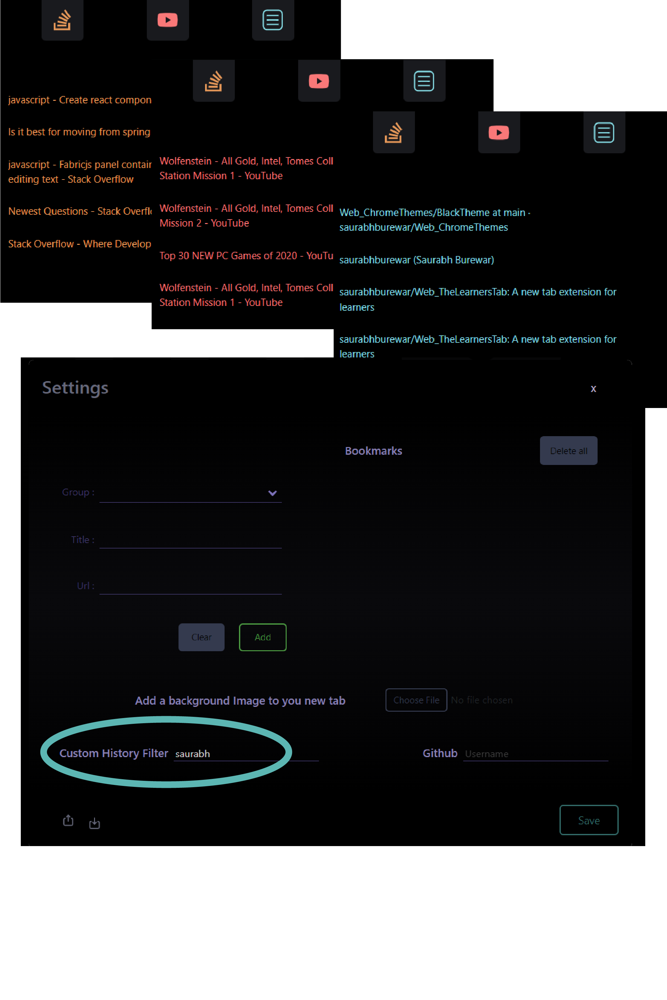
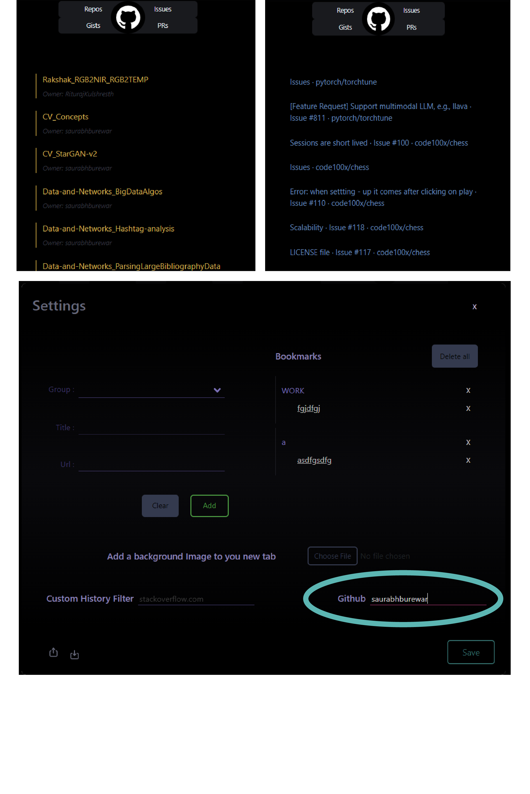
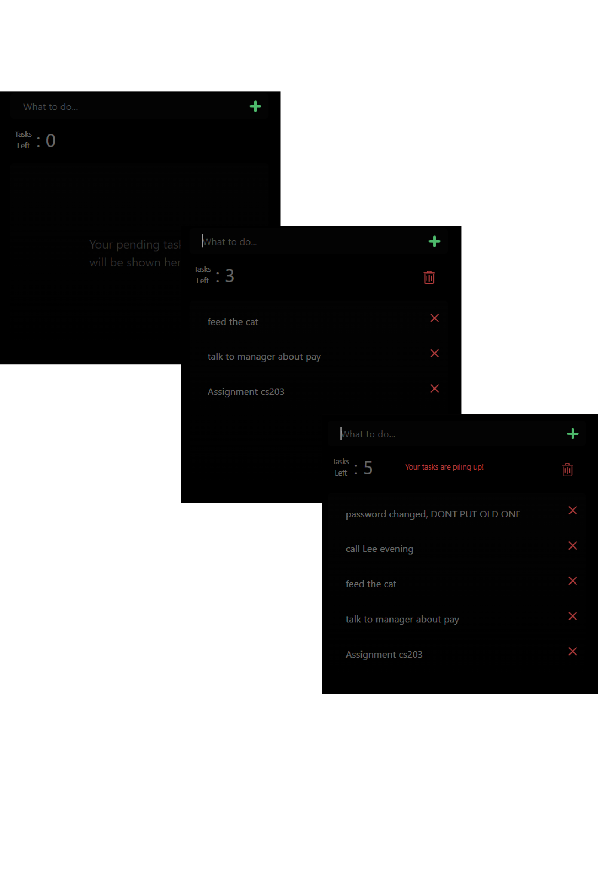
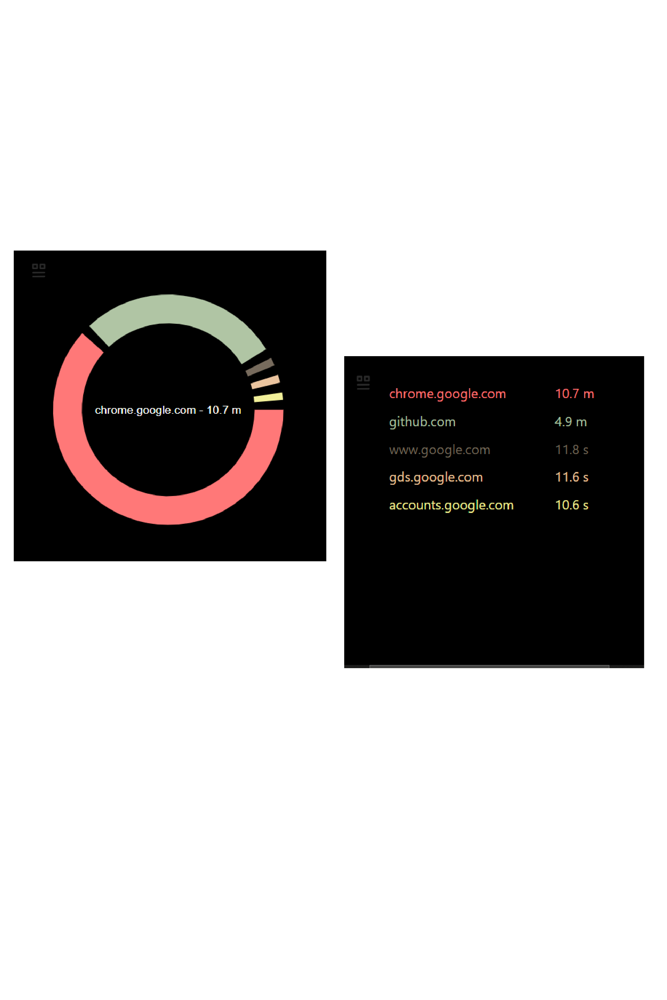
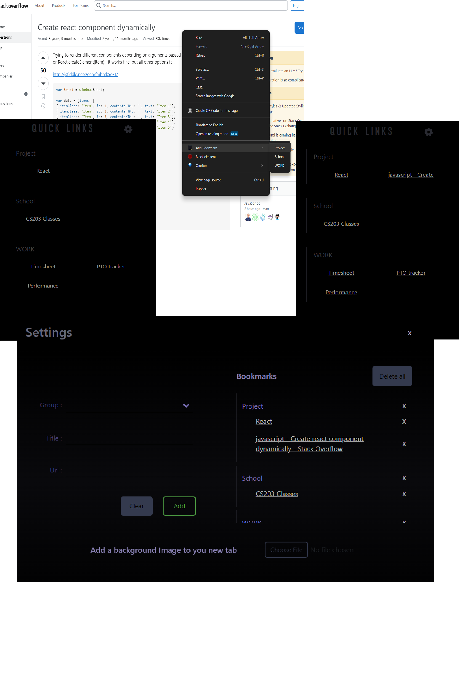

About
Learner's Tab is a new tab extension that offers a solution to various problems like hibernating while keeping tabs open, forgetting today's issues and having too many tabs open. It offers various features that make your learning more efficient with a quick view of your Github, your history of stack overflow and tutorials, a todo list to remember what is to be done tommorrow and much more....

Available for Chrome
Install now!

Github Repository
You can download here too!
Features

 History
History
The history component offers a filtered view of your browser history.
We offer two default filters - Stackoverflow and YouTube, the two most useful resources for starting as well as experienced developers.
We also provide a third filter which can be customized for any keyword of your liking.
We offer two default filters - Stackoverflow and YouTube, the two most useful resources for starting as well as experienced developers.
We also provide a third filter which can be customized for any keyword of your liking.


 Github Support
Github Support
- The Repos button lists all the public repos of the user. The username can be changed from settings.
- The Gists button lists all the public gists of the user. The username can be changed from settings.
- The Issues button lists all the issues that were recently visited by the user, so you can continue working on an issue or revisit a previous issue.
- The PRs button lists all the pull requests that were recently visited by the user, so you can quickly check if you request was merged.
 Todo
Todo
A simple list to track all your to-dos, so you can come back to work the next day, without worrying about forgetting something.
No need to track stuff on other apps, or your phone, just do it where it will always be visible.
No need to track stuff on other apps, or your phone, just do it where it will always be visible.


 Screen Timer
Screen Timer
Tracks the amount of time you spent on a website on your browser, so you can limit the time spent watching youtube videos.
With a click of a button, the data can viewed as a chart (which is default) or a list.
With a click of a button, the data can viewed as a chart (which is default) or a list.
 Quick links
Quick links
A bookmarking feature that lets save links on the new tab itself.
These links can be grouped, so can keep your work, school, personnal links seperate and quickly accessible.
Links can be easily added to a group by right-clicking and selecting the option while you are on a website.
We also support importing and exporting your list, so you dont have to set it all up again, when switching laptops/browsers.
These links can be grouped, so can keep your work, school, personnal links seperate and quickly accessible.
Links can be easily added to a group by right-clicking and selecting the option while you are on a website.
We also support importing and exporting your list, so you dont have to set it all up again, when switching laptops/browsers.
